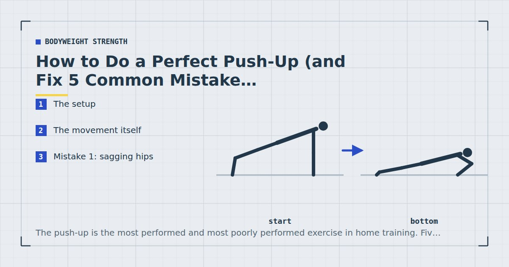
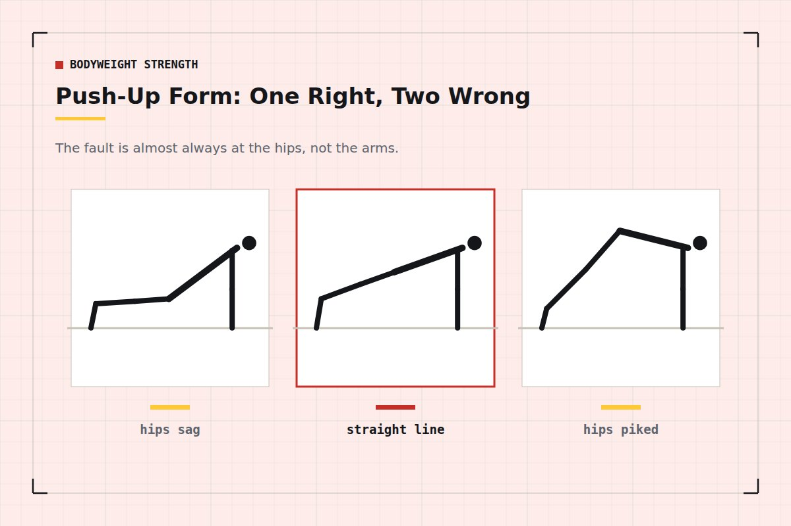

Bodyweight Strength
How to Do a Perfect Push-Up (and Fix 5 Common Mistakes)
The push-up is the most performed and most poorly performed exercise in home training. Five errors account for almost all of it, and four of them come from the same root cause.

Almost everyone can do something they call a push-up. Rather fewer are doing the exercise that actually trains the chest, shoulders and triceps through a useful range, and the gap between the two is where a lot of wasted training time lives.
This is what the movement should look like, the five errors that account for most of the problem, and the single underlying cause behind four of them.
The setup
Hands. Slightly wider than shoulder-width, positioned under the upper chest rather than under the shoulders. Fingers spread, pointing forward or very slightly outward. Grip the floor a little — actively pressing the fingertips down gives the shoulder something to stabilise against.
Feet. Together or up to hip-width apart. Wider is more stable and slightly easier; if balance is the limiting factor rather than strength, widen them.
Body. One straight line from ear to ankle. Squeeze the glutes and brace the abdominals as though preparing to be poked in the stomach. This is a plank that happens to move — the same trunk tension that makes a plank work is what makes a push-up work.
Shoulders. Pulled slightly down and back rather than shrugged toward the ears. A useful cue is to imagine tucking your shoulder blades into your back pockets before you start.
The movement itself
Lower under control — roughly two seconds — until your chest is an inch or so from the floor, or until your upper arms are at least parallel with the ground. Pause briefly without relaxing. Press back up, keeping the same body line, and stop just short of locking the elbows out completely.
The whole body should arrive at the bottom together and leave together. If your hips get there first, or your chest does, you are performing something other than a push-up.
Breathing: inhale on the way down, exhale on the way up. If you are holding your breath through multiple repetitions, the set is probably too hard for where you are.

Mistake 1: sagging hips
The most common error by a wide margin. The hips drop toward the floor, the lower back extends, and the exercise stops being a chest movement and becomes a lower-back one.
Beyond training the wrong thing, this loads the lumbar spine in extension while under tension, which is the position most likely to leave you sore in a way that has nothing to do with your chest.
Fix: squeeze the glutes hard before you start and keep squeezing. Most people cannot sag with fully contracted glutes. If the hips still drop partway through the set, the set is over — stop there rather than grinding out three more.
Mistake 2: flared elbows
Elbows travelling straight out to the sides, so the arms form a T with the body at the bottom. This places the shoulder in a position where the rotator cuff is compressed, and repeated over hundreds of repetitions it is a plausible route to shoulder irritation.
Fix: aim for roughly forty-five degrees between the upper arm and the torso. The classic cue is to imagine your body making an arrow shape rather than a T. A more reliable version: point your elbows backward and slightly out, not sideways.
Note that some flare is normal and unavoidable, and hunting for a perfect angle is not necessary. What you are avoiding is the extreme.
Mistake 3: partial range
Stopping six inches from the floor, usually without noticing. This is almost always a difficulty problem wearing a technique costume: the full range is too hard, so the body quietly shortens it.
Fix: raise your hands. A push-up on a kitchen counter through the full range trains more than a floor push-up through half of it. Pick a height where you can reach the bottom position and still press back up under control, then lower the surface over the following weeks. The staged ladder is in push-up progressions for beginners.
Range matters because muscle appears to respond well to being loaded at longer lengths, and the bottom of a push-up is where the chest is most stretched. Cutting that portion removes the most productive part of the repetition.
Mistake 4: head leading
The chin reaches for the floor ahead of the chest, so the neck extends and the repetition looks deeper than it is. Frequently paired with partial range — the head travels the distance the chest is not covering.
Fix: keep the neck neutral by looking at a point on the floor about a foot in front of your hands, and let the chest be the part that arrives first.
Mistake 5: hands too far forward
Hands positioned up by the head rather than under the upper chest. This lengthens the lever, puts the shoulder into more flexion than necessary, and makes the movement harder in a way that produces no additional benefit.
Fix: at the bottom of the repetition, your thumbs should be roughly in line with your nipples. If they are level with your face, walk the hands back.
Four of the five errors are the same error: the variation is too hard, and the body is finding a way to complete it anyway.
The root cause of four of these
Sagging hips, partial range, head leading and to some extent flared elbows are all compensations. The body is being asked to do something slightly beyond its current capacity, and it solves the problem by shortening the range, borrowing from the lower back, or changing the joint angles to something mechanically easier.
This means the fix for most push-up form problems is not more cueing. It is an easier variation. Someone doing eight clean counter push-ups is training more effectively than the same person doing eight ragged floor push-ups, and will reach good floor push-ups sooner.
This also explains why form deteriorates at the end of a set even in people with good technique. That is not a form problem — that is the set ending. Stopping when the body line breaks is the correct response, and evidence suggests you do not need to reach absolute failure to get most of the benefit anyway.1
How to check your own form
You cannot see your own body line, and proprioception is unreliable under effort. Two practical options:
Film a set from the side. Phone on the floor, propped against something, at roughly hip height. Ten seconds of footage will tell you more than any amount of cueing. Do this every few weeks rather than every session.
Use a broom handle. Lie a broom or dowel along your back. It should touch the back of your head, your upper back and your tailbone simultaneously, and stay in contact throughout the repetition. If it lifts off at any point, that is where the line is breaking.
Once the movement is solid, the next question is how to keep making it harder without adding weight — which is covered in how to build chest muscle without weights. If you are working toward your first floor push-up, start instead with the progression ladder.
Where to go next
For the full set of progressions across every movement pattern, see bodyweight exercise progressions. To put push-ups into a structured week, use the three-day split.
Frequently asked questions
What is correct push-up form?
Hands slightly wider than shoulder-width and positioned under the upper chest, body in one straight line from ear to ankle, elbows travelling back at roughly forty-five degrees, lowering under control until the chest is close to the floor, then pressing back up without locking out completely.
Why do my hips sag during push-ups?
Almost always because the variation is too hard for your current strength, so the trunk gives way. Squeezing the glutes hard before you start prevents most sagging. If the hips still drop mid-set, end the set — and consider an easier incline.
Should my elbows be tucked in during push-ups?
Partly. Aim for roughly forty-five degrees between the upper arm and the torso rather than flared straight out to the sides. Fully tucked elbows are unnecessarily difficult; fully flared places the shoulder in a compressed position.
How low should you go in a push-up?
Until your chest is roughly an inch from the floor, or at minimum until the upper arms are parallel with the ground. If you cannot reach that depth under control, raise your hands onto a surface rather than shortening the range.
Why do my shoulders hurt after push-ups?
Flared elbows and hands placed too far forward are the two most common technical causes, both of which put the shoulder into a compressed position. Persistent shoulder pain is worth discussing with a physiotherapist rather than training through.
How can I check my own push-up form?
Film a set from the side with your phone at hip height, or lie a broom handle along your back — it should stay in contact with your head, upper back and tailbone throughout the repetition.
Sources and further reading
- Vieira AF, Umpierre D, Teodoro JL, et al. “Effects of Resistance Training Performed to Failure or Not to Failure on Muscle Strength, Hypertrophy, and Power Output: A Systematic Review With Meta-Analysis.” Journal of Strength and Conditioning Research, 2021. PubMed.
- Schoenfeld BJ, Grgic J, Ogborn D, Krieger JW. “Strength and Hypertrophy Adaptations Between Low- vs. High-Load Resistance Training: A Systematic Review and Meta-analysis.” Journal of Strength and Conditioning Research, 2017;31(12):3508–3523. PubMed.
- NHS. Strength and Flex exercise plan.
- MedlinePlus, U.S. National Library of Medicine. Exercise and Physical Fitness.
Comments
Comments are not enabled yet. Add a hosted comment embed (Disqus, Commento, Giscus) inside this container when you are ready.